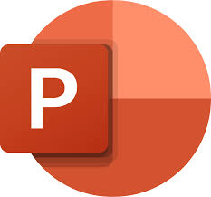

Materi tentang software
Word.

Excel.

PowerPoint.
OutLook.
OneNote.
OneDrive.
MICROSOFT WORD & MICROSOFT EXCEL
tools Ms Word
Fungsinya untuk menyisipkan/memasukkan gambar-gambar bangunan atau berupa bentuk seperti; persegi, lingkaran, segitiga, dan lain-lain. tools Ms Excel Manfaatnya memudahkan serta menghemat waktu pengguna dalam memproses data. Fungsi dan rumus Ms Excel Untuk membuat laporan, menghitung, menganalisis, dan mempresentasikan data. Rumus Ms Excel - AVERAGE = menampilkan nilai rata-rata numerik dalam set data, mengabaikan teks. - MIN = akan mengembalikan nilai minimum dalam daftar argumen tertentu. - MAX = akan mengembalikan nilai terbesar dalam daftar argumen tertentu. - SUM = menambahkan nilai. Anda dapat menambahkan nilai individual, referensi sel atau rentang, atau campuran ketiganya. - Conditional Formatting = merupakan fitur yang digunakan untuk memberikan format khusus pada sel-sel yang memenuhi aturan tertentu pada suatu range atau table pada Excel. Fitur ini bisa membantu kamu untuk mencari dan menganalisa data secara visual, mendeteksi untuk mencari letak kesalahan. - VLOOKUP = VLOOKUP(Apa yang ingin Anda cari, di mana Anda ingin mencarinya, nomor kolom dalam rentang yang berisi nilai yang akan dikembalikan, mengembalikan perkiraan atau pencocokan Tepat – ditunjukkan sebagai 1/TRUE, atau 0/FALSE). Misalnya: =VLOOKUP(A2,A10:C20,2,TRUE)